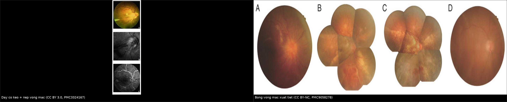
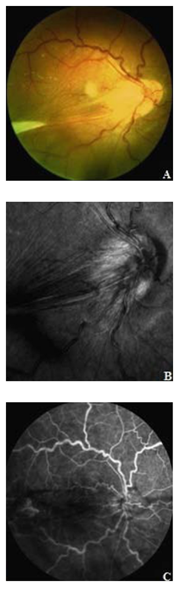
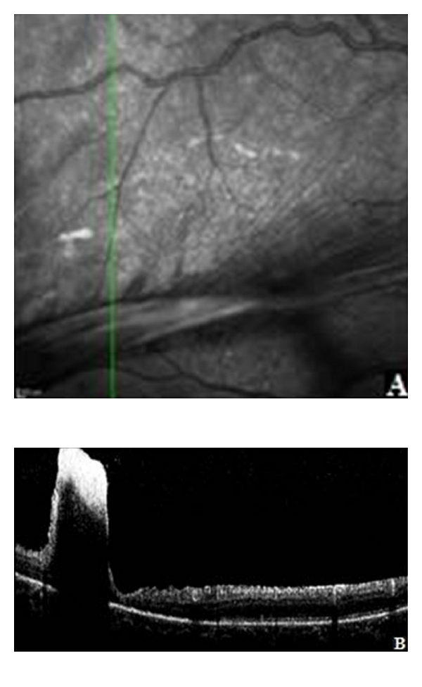
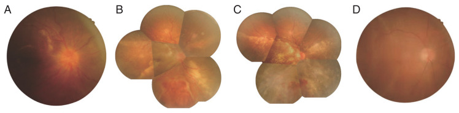
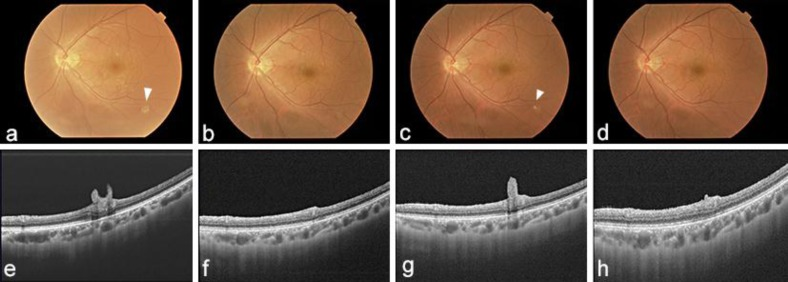

426 — Toxocariasis nội nhãn: theo dõi sau chẩn đoán & biến chứng muộn (CNV, bong võng mạc co kéo) / Ocular toxocariasis — long-term follow-up and late complications
Tags: pattern:u-hat pattern:co-keo pattern:tan-mach-hac-mac pattern:bong-vong-mac vung:vong-mac vung:dich-kinh vung:mat vung:tre-em protocol:OCT protocol:OCT-A protocol:FA protocol:anti-VEGF protocol:PPV protocol:corticoid
Mức chắc chắn (certainty): tổng hợp y văn (literature synthesis) — số liệu lấy từ bài tổng quan 2014 (PMC4116038), bài tổng quan kinh điển 2009 (PMC2659485), loạt 10 bệnh nhân hai mắt (PMC13627495), loạt 33 mắt CNV trẻ em (PMC8666601) và 3 ca nguyên văn có ảnh (PMC3324167, PMC9058278, PMC3934803). Câu nào là suy luận được ghi [suy luận].
Vì sao bài này quan trọng: 466 đã chốt chẩn đoán toxocariasis nội nhãn. Nhưng câu hỏi thật của bệnh nhi không phải "có phải giun không" mà là "mắt này còn nguy hiểm bao lâu nữa". U hạt xơ hoá tiếp tục co kéo nhiều năm, viêm dịch kính mạn tiếp tục kích thích tân mạch, và bệnh tái phát sau khi ngưng thuốc — ca nguyên văn dưới đây tái phát 4 tháng sau khi tổn thương đã "tan" (PMC3934803). Theo dõi sai nhịp = bỏ sót bong võng mạc co kéo và CNV ở đúng giai đoạn còn cứu được thị lực.
1. Tổng quan bệnh học – cơ chế hình ảnh
- Bệnh học (pathology): ấu trùng Toxocara chết/khu trú ở võng mạc → tổ chức hạt gồm bạch cầu ái toan, đại thực bào, tế bào khổng lồ rồi xơ hoá bằng nguyên bào sợi và collagen. Ba hệ quả muộn:
- Co kéo (traction): mô xơ co lại như sẹo, dính võng mạc vào dịch kính → dải co kéo (traction band) chạy từ u hạt tới đĩa thị, gây nếp gấp võng mạc, màng trước võng mạc (ERM), bong võng mạc co kéo (TRD).
- Tân mạch hắc mạc (CNV): viêm mạn phá biểu mô sắc tố (RPE) – màng Bruch; thiếu oxy và cytokin viêm tăng VEGF → mạch máu hắc mạc mọc dưới võng mạc. Vì vậy anti-VEGF là điều trị cơ chế, không phải "chống viêm".
- Viêm tồn dư: u hạt vẫn hoạt động từng đợt → phù hoàng điểm dạng nang (CME), viêm dịch kính tái diễn.
- TẠI SAO OCT là công cụ theo dõi chính: mô xơ co kéo tạo lực kéo tiếp tuyến và vuông góc — trên OCT thấy nếp gấp các lớp trong võng mạc, màng tăng hồi âm trên ILM, khoảng trống dưới võng mạc, và mất dải ellipsoid (EZ) tại vùng u hạt. CNV cho vật liệu tăng hồi âm dưới võng mạc (SHRM) + dịch dưới võng mạc; CNV hoạt động thì dịch tái xuất hiện sau mỗi lần hết thuốc.
- TẠI SAO FA/OCT-A: CNV rò thuốc ở thì muộn trên FA và có mạng mạch tăng tín hiệu trên OCT-A; sẹo xơ cũ chỉ khiếm khuyết cửa sổ (window defect), không rò. Phân biệt "sẹo sáng" với "CNV đang hoạt động" là điểm quyết định có tiêm hay không.
- Số liệu định lượng cốt lõi:
- Nguyên nhân giảm thị lực trong OT: viêm dịch kính 52,6%, CME 47,4%, TRD 36,8% (Pivetti-Pezzi 2009, PMC2659485) — nghĩa là gần một nửa mất thị lực do biến chứng điều trị được, không phải do u hạt.
- Tái phát viêm sau điều trị: phối hợp corticoid + albendazole giảm tái phát 6 tháng còn 17,4% so với 54,5% khi chỉ dùng corticoid (Ahn 2014, PMC4116038).
- Bong võng mạc tái phát sau phẫu thuật dịch kính: 24–42% do viêm tồn dư (PMC2659485).
- Mắt thứ hai: trong loạt 10 bệnh nhân hai mắt (tuổi 21 ± 15), khởi phát không đồng thì; tỷ lệ TRD tăng từ 25% ở mắt đến trước lên 60% ở mắt đến sau (p = 0,016) (Gu 2026, PMC13627495).
- CNV ở trẻ em (mọi nguyên nhân, 33 mắt): 97% là CNV type 2, điều trị 1 mũi anti-VEGF + PRN cần trung bình 1,40 ± 0,58 mũi, không ca nào tái phát trong thời gian theo dõi; toxocariasis chiếm 1/30 bệnh nhân (3,3%) (Zhang 2021, PMC8666601).
2. Mẫu hình + chẩn đoán phân biệt theo vị trí và cơ chế (gamut)
Câu hỏi trung tâm: "thị lực giảm này do viêm còn hoạt động, do co kéo, hay do mạch máu mới?" Mỗi câu trả lời là một cách điều trị khác nhau.
- A. Hoàng điểm (macula) — giảm thị lực trung tâm:
- CNV (mờ trung tâm, biến dạng thị giác, OCT có dịch dưới võng mạc) → anti-VEGF.
- CME (OCT: nang dịch trong võng mạc) → NSAID tại chỗ/corticoid; phân biệt CME do viêm với CME do thuốc.
- ERM co kéo (nếp gấp + màng trên ILM) → theo dõi, mổ khi thị lực giảm tiến triển.
- U hạt hoàng điểm (khối vàng–trắng tại hoàng điểm) → tiên lượng xấu vì phá tế bào quang thụ.
- B. Ngoại vi / xích đạo — thường "im lặng" rồi bùng:
- Dải co kéo → TRD (bong võng mạc không rách, hình phễu/kéo) → mổ dịch kính + bóc màng.
- Nang võng mạc ngoại vi (peripheral retinal cyst) — ca 2023 đo 2,6 mm và 2 mm, thành mỏng, dễ bị đọc nhầm là bong võng mạc (PMC10397159).
- Rách do co kéo → bong võng mạc nguyên phát (rhegmatogenous) — phải tìm lỗ rách, không chỉ bóc màng.
- C. Toàn nhãn — bệnh cảnh muộn:
- Viêm nội nhãn mạn → đục thể thủy tinh, dính đồng tử, glôcôm tân mạch, teo nhãn cầu (phthisis).
- Corticoid kéo dài → đục thể thủy tinh và glôcôm do corticoid (bài 1404) — bản thân điều trị cũng gây mù.
- D. Kiểu tái phát cần nhận ra: tổn thương nhô ra từ bề mặt võng mạc vào dịch kính xuất hiện lại sau khi đã phẳng — ca nguyên văn tái phát 4 tháng sau khi ngưng phác đồ (PMC3934803). Kiểu này khác "sẹo cũ" (sẹo không nhô, không viêm).
3. Bảng so sánh phân biệt (ma trận đối chiếu)
| Thực thể (entity) | Hình ảnh điển hình | Chốt vào (rule-in) | Chốt loại (rule-out) | Gợi ý xác nhận |
|---|---|---|---|---|
| CNV do toxocariasis | Dưới võng mạc: SHRM + dịch dưới võng mạc; FA rò thì muộn; OCT-A có mạng mạch | Dịch dưới võng mạc tái phát + rò trên FA + OCT-A có mạch | Sẹo xơ phẳng, không rò, không dịch → chỉ theo dõi | OCT 4 tuần/lần khi đang tiêm; FA/OCT-A khi nghi |
| Bong võng mạc co kéo (TRD) | Dải xơ từ u hạt tới đĩa thị, võng mạc căng phễu, không rách, di động hạn chế trên B-scan | Dải co kéo + bong võng mạc không rách | Có lỗ rách + dịch di chuyển → bong nguyên phát | B-scan khi môi trường đục; OCT vùng hoàng điểm; mổ bóc màng |
| Bong võng mạc xuất tiết | Dịch dưới võng mạc lan rộng, không rách, có thể kèm xuất tiết; đĩa thị phù | Dịch lan + không lỗ rách + đáp ứng corticoid/kháng viêm | Dải co kéo rõ + bong khu trú → TRD | OCT, B-scan; theo dõi sau corticoid/kháng viêm |
| CME | Nang dịch trong võng mạc, mất foveal depression; FA hoa hồng (petaloid) | Nang trong võng mạc + rò hoàng điểm | Dịch dưới võng mạc đơn thuần → nghĩ CNV/xuất tiết | OCT từng lần khám; đo độ dày trung tâm |
| ERM co kéo | Màng tăng hồi âm trên ILM + nếp gấp; không dịch dưới võng mạc | Màng trên ILM + nếp gấp + thị lực giảm tiến triển | Có dải tới u hạt/đĩa thị → co kéo do u hạt | OCT; theo dõi 3–6 tháng; mổ khi chức năng giảm |
| Tái phát u hạt | Tổn thương nhô vào dịch kính + viêm dịch kính nhẹ; có thể kèm tăng bạch cầu ái toan | Tổn thương nhô mới + viêm tái diễn sau khi đã phẳng | Sẹo phẳng, không viêm, không nhô → di chứng | So ảnh cũ + OCT; ELISA IgG Toxocara |
| Nang võng mạc ngoại vi | Nang thành mỏng, bờ rõ, trong (2–2,6 mm), không dịch di chuyển | Bờ rõ + không rách + không thay đổi theo tư thế | Có rách/dịch di chuyển → bong võng mạc | UBM/siêu âm tần số cao; chụp lại 3 tháng |

Trái: dải co kéo từ u hạt tới đĩa thị + nếp gấp võng mạc, FA rò từ tổn thương. Phải: bong võng mạc xuất tiết (A lúc vào, B–D sau tiêm dexamethasone: đĩa thị bớt phù, xuất tiết hấp thu, võng mạc phẳng lúc 8 tháng). Nguồn: Verallo 2012 (PMC3324167) CC BY 3.0 và Cai 2022 (PMC9058278) CC BY-NC; ảnh ghép letterbox, không crop.Dấu hiệu chốt trên từng phương thức
- OCT: nếp gấp lớp trong + màng trên ILM (co kéo); SHRM + dịch dưới võng mạc (CNV); nang trong võng mạc (CME); mất EZ tại u hạt (tổn thương tế bào quang thụ).
- FA: rò thì muộn = mạch máu mới/viêm hoạt động; khiếm khuyết cửa sổ = sẹo RPE; hoa hồng = CME.
- OCT-A: mạng mạch dưới võng mạc có tín hiệu dòng chảy = CNV hoạt động; cần chụp lặp lại để phân biệt mạch mới với mạch hắc mạc bình thường.
- B-scan: dải tăng hồi âm dính đĩa thị, bong võng mạc không rách, nang ngoại vi; bắt buộc khi đục thể thủy tinh/viêm dịch kính dày.
4. Protocol theo dõi + điều trị biến chứng
- Lịch theo dõi sau chẩn đoán [suy luận từ diễn tiến ca và khuyến cáo điều trị viêm mạn]: khám + OCT 2 tuần sau khi bắt đầu thuốc; sau đó 1 tháng, 3 tháng, 6 tháng, 12 tháng, rồi mỗi 6–12 tháng nếu yên. Lý do theo dõi dài: tái phát đã ghi nhận 4 tháng sau khi tổn thương phẳng (PMC3934803) và TRD tiến triển nhiều năm sau u hạt.
- Mỗi lần khám tối thiểu: thị lực có chỉnh kính, nhãn áp (vì corticoid), đèn khe (viêm tiền phòng, dính đồng tử), soi đáy mắt giãn đồng tử tới tận chu biên, OCT hoàng điểm. Nghi CNV/viêm hoạt động → FA ± OCT-A. Môi trường đục → B-scan.
- Điều trị nhiễm giun + viêm (nền tảng): albendazole phối hợp corticoid; liều theo Barisani-Asenbauer (dẫn trong PMC4116038): người lớn 800 mg × 2/ngày, trẻ 400 mg × 2/ngày, kèm corticoid; 5 bệnh nhân không tái phát trong 13,8 tháng. Phác đồ của bài 466 (albendazole 400 mg/ngày × 30 ngày) là phác đồ khác của DUSN — không trộn hai phác đồ.
- CNV: anti-VEGF nội nhãn theo 1 + PRN, đánh giá lại 4 tuần/lần bằng OCT; ở loạt CNV trẻ em (mọi nguyên nhân) trung bình 1,40 ± 0,58 mũi là đủ kiểm soát, không tái phát (PMC8666601). Nếu CNV kèm co kéo nặng/đục dịch kính → PPV kết hợp anti-VEGF (ca toxocariasis trong loạt này được xử trí như vậy). Corticoid không thay anti-VEGF.
- TRD: PPV 25–27G + bóc màng/giải phóng co kéo, dùng dầu silicon hoặc khí tùy độ phức tạp; ca trẻ 11 tuổi dùng 25G + bóc màng + triamcinolone quanh nhãn 40 mg cuối mổ để giảm viêm tồn dư (PMC13553358). Cảnh báo bệnh nhân bong tái phát 24–42% (PMC2659485) → theo dõi sát 6 tháng đầu sau mổ.
- Bong xuất tiết/CME nặng: dexamethasone implant nội nhãn đã được báo cáo làm võng mạc phẳng, hết xuất tiết lúc 8 tháng ở ca OT (PMC9058278); lựa chọn khác: corticoid uống/tiêm dưới Tenon, NSAID tại chỗ. Theo dõi nhãn áp và đục thể thủy tinh sau implant.
- Không có hệ phân độ RADS riêng cho OT — mô tả theo 3 thể (viêm nội nhãn mạn / u hạt cực sau / u hạt ngoại vi) và biến chứng chính (CNV, TRD, CME, ERM).
flowchart TD
A[Đã chẩn đoán toxocariasis nội nhãn] --> B[Khám + OCT + nhãn áp: 2 tuần, 1-3-6-12 tháng]
B --> C{Thị lực giảm hoặc OCT bất thường?}
C -->|Không| D[Theo dõi 6-12 tháng, dặn tái khám khi mờ]
C -->|Có| E[OCT hoàng điểm + FA/OCT-A + B-scan nếu môi trường đục]
E --> F{Nguyên nhân?}
F -->|Dịch dưới võng mạc + rò| G[CNV: anti-VEGF 1+PRN, đánh giá 4 tuần]
F -->|Nang trong võng mạc| H[CME: NSAID/corticoid, cân nhắc implant]
F -->|Dải co kéo, bong không rách| I[TRD: PPV + bóc màng + dầu/khí]
F -->|Tổn thương nhô mới + viêm| J[Tái phát: albendazole + corticoid lại]
G --> K[Kiểm tra nhãn áp, đục thể thủy tinh]
H --> K
I --> L[Theo dõi bong tái phát 24-42% trong 6 tháng]
J --> B
K --> B
5. Biến thể bình thường và cạm bẫy
- "Mắt yên lặng = đã khỏi" là cạm bẫy nguy hiểm nhất: u hạt xơ tiếp tục co kéo khi không có viêm; TRD có thể xuất hiện nhiều năm sau lần viêm cuối. Vẫn phải soi tới chu biên và chụp OCT định kỳ.
- CNV bị che bởi viêm dịch kính: thị lực giảm không tương xứng với độ đục môi trường → đừng chờ "hết viêm rồi tính"; OCT/FA sớm để không bỏ cửa sổ điều trị.
- Điều trị corticoid đơn thuần: tái phát 6 tháng 54,5% so với 17,4% khi phối hợp albendazole (PMC4116038) — corticoid giảm viêm nhưng không diệt giun.
- Theo dõi quá ngắn: ca nguyên văn phẳng sau 8 tháng điều trị, tái phát 4 tháng sau đó với tổn thương nhô vào dịch kính, rồi phẳng sau 2 tháng albendazole đơn thuần (PMC3934803) — lịch 3 tháng/lần trong năm đầu là tối thiểu.
- Bỏ sót mắt thứ hai: 10/10 ca hai mắt khởi phát không đồng thì, mắt đến sau có TRD 60% (PMC13627495) — khám cả hai mắt mỗi lần, kể cả khi mắt kia "bình thường".
- Nhầm nang ngoại vi với bong võng mạc: nang 2–2,6 mm thành mỏng, không rách (PMC10397159); mổ nhầm nang không có chỉ định = làm tổn thương võng mạc lành.
- Nhầm TRD với bong nguyên phát: nếu không bóc màng/giải phóng co kéo, bơm dầu đơn thuần sẽ thất bại và bong lại — luôn tìm dải xơ dính đĩa thị trên B-scan/OCT.
- Tác dụng phụ của chính điều trị: corticoid kéo dài gây glôcôm và đục thể thủy tinh; trẻ nhỏ còn nguy cơ nhược thị — đo nhãn áp mỗi lần, khám khúc xạ định kỳ [suy luận từ thực hành nhi].
6. Tự lượng giá — Blind Quiz ngay trên trang tĩnh
Ca 1 — Nữ 24 tuổi, người châu Á, nhìn mờ một mắt, đáy mắt có "dây trắng"

- Gợi ý lâm sàng: không đau, không đỏ; không bệnh toàn thân; mắt còn lại bình thường.
- Câu hỏi: Cấu trúc dây trắng nối khối tổn thương với đĩa thị là gì? Nó gây biến chứng gì? Ba thăm khám cần làm ngay?
Bấm để hiện đáp án (findings + chẩn đoán)
- Dấu hiệu: (A) khối trắng ở vùng thái dương + dải xơ chạy từ khối tới đĩa thị, võng mạc hoàng điểm bị kéo thành nếp; (B) ảnh hồng ngoại cho thấy co kéo đĩa thị; (C) FA có rò từ tổn thương (viêm hoạt động/mạch máu).
- Chẩn đoán: u hạt toxocariasis cực sau (posterior pole granuloma) có dải co kéo — dải xơ không phải "mạch máu", mà là mô xơ co kéo; đây là cơ chế của TRD và nếp gấp hoàng điểm.
- Việc cần làm: OCT hoàng điểm (tìm nếp gấp/dịch), B-scan (bong võng mạc ẩn), FA/OCT-A (rò/CNV), ELISA Toxocara; theo dõi sát và tư vấn mổ nếu co kéo tiến triển.

- OCT: (A) ảnh hồng ngoại cho thấy nếp gấp võng mạc; (B) SD-OCT qua nếp gấp: các lớp trong tăng hồi âm dày lại, bên dưới là vùng giảm/kém hồi âm che mất các lớp võng mạc ngoài — tương ứng lực kéo của dải xơ.
- Nguồn ảnh: Verallo O et al., Case Rep Med 2012 (PMC3324167), CC BY 3.0.
- Nguồn ảnh: Verallo O et al., Case Rep Med 2012 (PMC3324167), CC BY 3.0.
Ca 2 — Bé trai 13 tuổi, mắt phải mờ còn đếm ngón tay, đĩa thị phù, có xuất tiết quanh hoàng điểm

- Gợi ý lâm sàng: không sốt; thị lực mắt phải chỉ còn đếm ngón tay; OCT hoàng điểm có khoảng trống dưới võng mạc; không thấy u hạt rõ.
- Câu hỏi: Đây là bong võng mạc co kéo hay xuất tiết? Vì sao không mổ ngay? Theo dõi bằng gì?
Bấm để hiện đáp án (findings + chẩn đoán)
- Dấu hiệu: (A) xuất tiết quanh hoàng điểm, đĩa thị phù, tĩnh mạch giãn ngoằn ngoèo, xuất huyết trước võng mạc; (B–D) sau tiêm dexamethasone: đĩa thị bớt phù, xuất huyết/xuất tiết hấp thu dần, võng mạc phẳng lúc 8 tháng.
- Chẩn đoán: bong võng mạc xuất tiết trong toxocariasis — dịch lan, không rách, không có dải co kéo; điều trị kháng viêm (implant dexamethasone) chứ không phải mổ dịch kính ngay.
- Vì sao không mổ ngay: mổ bong xuất tiết do viêm khi chưa kiểm soát viêm dễ bong lại và tổn thương thêm; mục tiêu là làm phẳng bằng kháng viêm trước.
- Nguồn ảnh: Cai Y et al., Korean J Parasitol 2022 (PMC9058278), CC BY-NC.
Ca 3 — Nam 50 tuổi, đã điều trị 8 tháng, tổn thương "đã phẳng" rồi mờ lại

- Gợi ý lâm sàng: đã ngưng thuốc 4 tháng; không đau; thị lực giảm lại; tổn thương ban đầu là u hạt cực sau có ấu trùng trong võng mạc.
- Câu hỏi: Tổn thương "nhô ra" trên OCT là sẹo cũ hay tái phát? Cần làm gì trước khi tăng corticoid?
Bấm để hiện đáp án (findings + chẩn đoán)
- Dấu hiệu: (a, e) tổn thương trắng nhô từ bề mặt võng mạc vào dịch kính; (b, f) tan sau 8 tháng điều trị; (c, g) tái phát với tổn thương nhô mới sau 4 tháng; (d, h) phẳng sau 2 tháng albendazole đơn thuần.
- Chẩn đoán: tái phát u hạt hoạt động, không phải sẹo — sẹo xơ không nhô và không kèm viêm dịch kính.
- Trước khi tăng corticoid: loại trừ CNV (OCT-A/FA) và nhiễm trùng khác; nếu tái phát do giun còn sống → albendazole + corticoid theo phác đồ, không chỉ corticoid.
- Nguồn ảnh: Hashida N et al., Case Rep Ophthalmol 2014 (PMC3934803), CC BY-NC.
Bài liên quan chéo
- 400 – Tổng quan Mắt & thị giác
- 466 – Toxocariasis nội nhãn: chẩn đoán, 3 thể và điều trị ban đầu
- 425 – DUSN & ấu trùng di động dưới võng mạc
- 1410 – Lấy dầu silicon và dầu tồn lưu (mắt đã mổ dịch kính)
- 1418 – Phù hoàng điểm đáp ứng anti-VEGF
- 1404 – Biến chứng mạn của anti-VEGF và corticoid
Ảnh
- Tên file:
426_slug_Modality_SourceID.jpg; nguồn + giấy phép từng ảnh ởimages/CREDITS.md. - Ảnh composite
composite_cokep-vs-xuat-tiet.jpgtạo bằngtools/make_composite.py(letterbox, không crop/kéo giãn) từ 2 ảnh CC BY/CC BY-NC.
Không dùng để chẩn đoán độc lập khi chưa có người hướng dẫn.